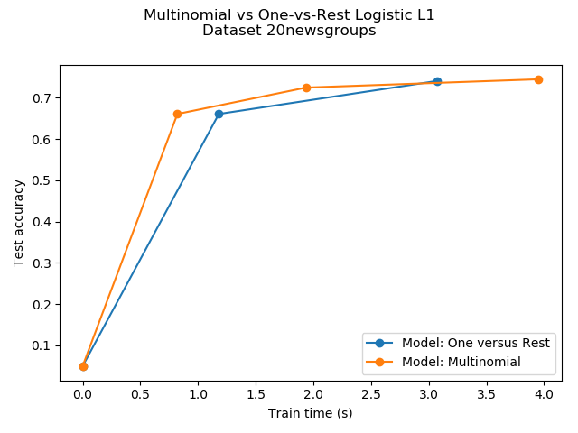

Note
Click here to download the full example code
在newgroups20数据集上的多类稀疏logisitic回归¶
在newgroups20数据集的文档分类任务上，比较 multinomial logistic L1 回归算法 和 one-versus-rest L1 logistic 回归算法 。
Multinomial logistic regression 产生更准确的结果而且在较大规模的数据集上可以训练的更快。
这里我们使用 l1 sparsity 来把那些 不提供信息的特征的权重 裁剪为0。 如果我们的目的是抽取每个类的强辨别性词汇，这么做是好的。 如果我们的目标是获得最佳的预测准确率，最好是使用无稀疏诱导性的L2惩罚。
在输入特征的稀疏子集上做预测的一个更为传统的(并且更好的)方法是 使用单变量特征选择再紧跟一个 传统的 (l2-penalised) Logistic回归模型。
翻译者： Antares@studyai.com
Out:
Dataset 20newsgroup, train_samples=9000, n_features=130107, n_classes=20
[model=One versus Rest, solver=saga] Number of epochs: 1
[model=One versus Rest, solver=saga] Number of epochs: 3
Test accuracy for model ovr: 0.7410
% non-zero coefficients for model ovr, per class:
[0.27054655 0.66330021 0.80395367 0.73247404 0.67713497 0.73477984
0.40889422 0.48959702 1.01301237 0.56261385 0.60104376 0.332803
0.7094161 0.85083816 0.56876263 0.65715142 0.64408525 0.81163965
0.44271254 0.41120001]
Run time (3 epochs) for model ovr:3.02
[model=Multinomial, solver=saga] Number of epochs: 1
[model=Multinomial, solver=saga] Number of epochs: 3
[model=Multinomial, solver=saga] Number of epochs: 7
Test accuracy for model multinomial: 0.7450
% non-zero coefficients for model multinomial, per class:
[0.13296748 0.11759552 0.13296748 0.13988486 0.1268187 0.16140561
0.15218243 0.09069458 0.07762841 0.12143851 0.14910804 0.10837234
0.18830655 0.1245129 0.168323 0.21828188 0.11605832 0.07839701
0.06917383 0.15602543]
Run time (7 epochs) for model multinomial:4.18
Example run in 12.338 s
import time
import matplotlib.pyplot as plt
import numpy as np
from sklearn.datasets import fetch_20newsgroups_vectorized
from sklearn.linear_model import LogisticRegression
from sklearn.model_selection import train_test_split
print(__doc__)
t0 = time.clock()
# 我们使用 SAGA solver
solver = 'saga'
# 减小样本量可以跑得更快
n_samples = 10000
# Memorized fetch_rcv1 for faster access
dataset = fetch_20newsgroups_vectorized('all')
X = dataset.data
y = dataset.target
X = X[:n_samples]
y = y[:n_samples]
X_train, X_test, y_train, y_test = train_test_split(X, y,
random_state=42,
stratify=y,
test_size=0.1)
train_samples, n_features = X_train.shape
n_classes = np.unique(y).shape[0]
print('Dataset 20newsgroup, train_samples=%i, n_features=%i, n_classes=%i'
% (train_samples, n_features, n_classes))
models = {'ovr': {'name': 'One versus Rest', 'iters': [1, 3]},
'multinomial': {'name': 'Multinomial', 'iters': [1, 3, 7]}}
for model in models:
# 添加一个初始准确率(基于随机猜测)用于绘图
accuracies = [1 / n_classes]
times = [0]
densities = [1]
model_params = models[model]
# Small number of epochs for fast runtime
for this_max_iter in model_params['iters']:
print('[model=%s, solver=%s] Number of epochs: %s' %
(model_params['name'], solver, this_max_iter))
lr = LogisticRegression(solver=solver,
multi_class=model,
C=1,
penalty='l1',
fit_intercept=True,
max_iter=this_max_iter,
random_state=42,
)
t1 = time.clock()
lr.fit(X_train, y_train)
train_time = time.clock() - t1
y_pred = lr.predict(X_test)
accuracy = np.sum(y_pred == y_test) / y_test.shape[0]
density = np.mean(lr.coef_ != 0, axis=1) * 100
accuracies.append(accuracy)
densities.append(density)
times.append(train_time)
models[model]['times'] = times
models[model]['densities'] = densities
models[model]['accuracies'] = accuracies
print('Test accuracy for model %s: %.4f' % (model, accuracies[-1]))
print('%% non-zero coefficients for model %s, '
'per class:\n %s' % (model, densities[-1]))
print('Run time (%i epochs) for model %s:'
'%.2f' % (model_params['iters'][-1], model, times[-1]))
fig = plt.figure()
ax = fig.add_subplot(111)
for model in models:
name = models[model]['name']
times = models[model]['times']
accuracies = models[model]['accuracies']
ax.plot(times, accuracies, marker='o',
label='Model: %s' % name)
ax.set_xlabel('Train time (s)')
ax.set_ylabel('Test accuracy')
ax.legend()
fig.suptitle('Multinomial vs One-vs-Rest Logistic L1\n'
'Dataset %s' % '20newsgroups')
fig.tight_layout()
fig.subplots_adjust(top=0.85)
run_time = time.clock() - t0
print('Example run in %.3f s' % run_time)
plt.show()
Total running time of the script: ( 0 minutes 12.339 seconds)